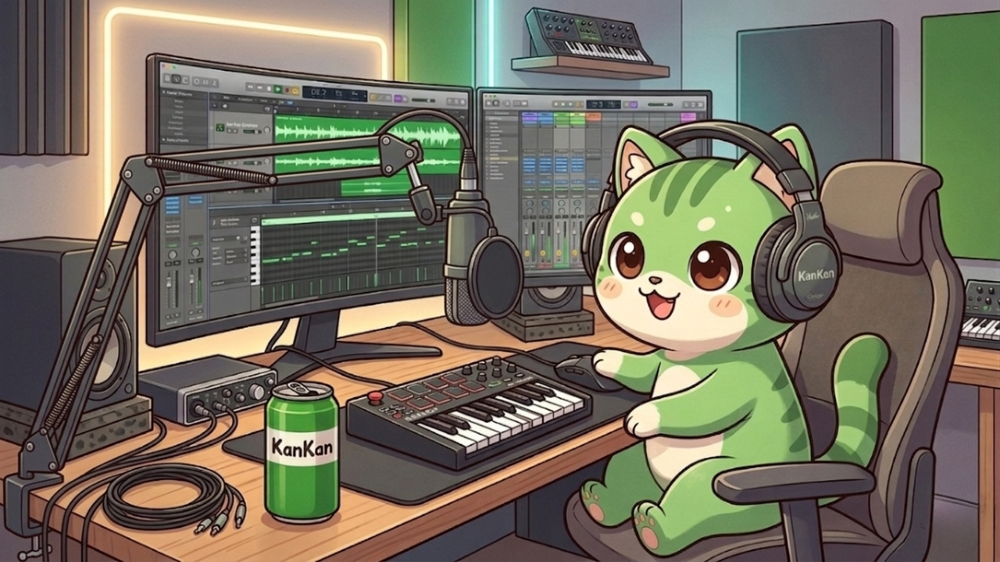

画面を見ながら、一緒に。
DiscordとTeamViewerを使うオンラインレッスン。講師が操作を確認し、必要に応じて補助します。
DTM初心者〜中級者向け
DTMにちょっと興味がある。何から始めたらいい？
そんな方も、いつもの録音を見直したい方も、講師と一緒に実際に音を出しながら学べます。

いつもの部屋が、
あなたの音楽教室になる。
LEARN THE PROCESS
マイクとの距離を変えて歌い、録れた声を聴き比べる。サビにハモリを重ね、響きが広がる瞬間を聴く。自分の耳で発見し、自分の手でもう一度できる。その積み重ねで、音楽の表現を広げていきます。
全6コースで録音・編集・音作り・仕上げを扱います。作曲・音楽理論のレッスンは対象外です。ハモリに必要なキーや音選びは、実際の編集の中で確認します。
FIND YOUR LESSON
すべてを最初から受ける必要はありません。
現在できる作業と、次の目標が目安です。
目標を選ぶと、おすすめのコースを表示します。
CURRICULUM
各コースの詳細で、本編3回の内容と
終了時にできることを確認できます。
6コースの内容・受講の目安・料金をまとめて比較
カリキュラム一覧画像を開くHOW YOU LEARN
DiscordとTeamViewerを使うオンラインレッスン。講師が操作を確認し、必要に応じて補助します。
スマホで閲覧しやすい日本語教材を配布。PCの操作画面と教材を、行き来しやすい進め方です。
本人が受講した個人レッスンのアーカイブを配布。説明や操作を見返して、復習に使えます。
5 LESSONS
各回90分。共通の練習素材を軸に、
作業を積み重ねて提出物を完成させます。
申込時の事前回答を基に詳しくヒアリング。知識や操作環境を確認し、カリキュラムと進め方を共有します。
本編レッスン①〜③。講師の実演と受講者自身の操作を組み合わせ、各回の間に復習・課題に取り組みます。
提出物と操作で習得度を確認。受講後のヒアリングと、次の学びについて相談します。
PLAN & PAYMENT
マンツーマンは、各コース全5回。学びたいコースを単独で選ぶことも、3コースをパックで受講することもできます。
現在調整中です。確定後にこのページでご案内します。
受付開始前に、税込総額・支払期限・キャンセル条件をご案内します。
受講者30名以上での開始を予定しています。1回60分×全7回。Discordサーバーで講師の実演デモを視聴する形式で、質疑応答はありません。
初回の流れ説明・ヒアリング、本編5回、最終回のステップアップ案内で構成。購入したグループレッスンのアーカイブを配布し、習得度は自身で確認します。もう一度学びたい場合は同じレッスンを反復します。
現在、このサイトではグループレッスンの申込を受け付けていません。料金・反復受講の条件は別途ご案内します。
QUESTIONS
録音から学ぶ「はじめてみよう編」、DAW操作から学ぶ「DAW制作編」を用意しています。使用環境や経験は申込時と初回に確認します。
現在できる作業を目安に、学びたい工程から選べます。「完成済み伴奏と歌」のミックスと、「楽器別素材と歌」のミックスは別コースです。
対応DAWと必要機材の詳細は、受付開始前にご案内します。事前ヒアリングではOS、DAW、マイク、オーディオインターフェースなどを確認します。
各巻のカリキュラム・順序・達成基準は共通です。用語の説明、操作の区切り方、ショートカットの紹介などを知識・経験に合わせます。
配布方法と視聴期間は、受付開始前にご案内します。
MAKE YOUR NEXT SOUND.
受講したいコースを選び、経験や機材を教えてください。
初回のヒアリングにつながる準備から始めましょう。
受付窓口・取引条件の準備が整うまで、入力内容の確認・保存のみご利用いただけます。